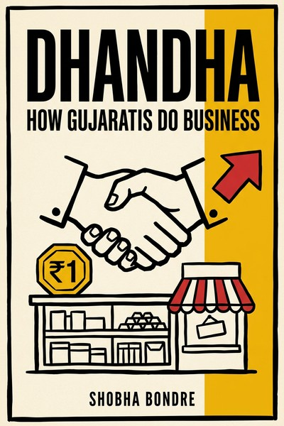

Library › Business & Startups
Dhandha: How Gujaratis Do Business — Summary & Key Lessons

From Mumbai trains to American motels: the stories of ordinary Gujaratis who built extraordinary businesses with family labor, frugality and fifty-year patience.
📖 OPEN THE FULL INTERACTIVE BREAKDOWN →🌐 Read it in Hindi, Hinglish, Gujarati, Tamil & 22 more languages — free, with audio.
💡 The Big Idea
Bondre profiles Gujarati business families across three continents: the snack business of Balaji wafers' founder (a milk vendor who built a chips empire in Namakkal? no, Rajkot), motel dynasties of the Patels in the United States (the famous 'Patel motel cartel' owning a huge share of America's budget motels), diamond traders of Palanpur in Antwerp and Mumbai, and constructed the pattern: family as the first workforce, extreme frugality as startup capital, community lending circles as banks, chain migration (one success pulls the next cousin), buying distressed assets in downturns, live-in work ethics, and gradual professionalization in the second generation. The book's charm is specificity without jargon: no frameworks, just the actual operating habits that compound across generations.
🧠 The 8 Key Lessons
Lesson 1: Family Is the First Startup Team
The Living Business
Gujarati ventures typically begin as family units: unpaid or underpaid labor (spouse at the counter, children on weekends), shared housing, expenses compressed to near zero, which lets a marginal business survive the years that kill salary-funded startups. The family absorbs the wage bill until the business can. The lesson generalizes: a founding team willing to live at survival cost has a structurally longer runway than a funded competitor with payroll optics.
📖 Example: The motel stories follow one script: the first migrant couple lives in the motel's back room, works the desk themselves, cleans rooms between checkouts, and banks nearly all revenue, so the mortgage shrinks while their city cousins pay rent. Read the full example →
⚡ Do this: Compute your venture's survival cost (everyone at subsistence, family-supported). If your plan cannot survive at that burn for 24 months, the plan is the problem, not the funding market.
Lesson 2: Community Capital: The Bank Made of Trust
Bawa and the Circle
Gujarati networks finance members through informal structures: community loans at low interest, rotating credit circles, supplier credit within the network, and chain-migration support (the next family's ticket and seed funded by the last success). Enforcement is reputational: default and the network closes. It is venture capital with accountability, and it funds businesses banks would never touch.
📖 Example: The diamond and motel stories repeat the mechanic: an established family guarantees or lends to the next newcomer at below-market terms, and the newcomer's first duty is repayment, because the network's future generosity depends on it. Read the full example →
⚡ Do this: Build or join one rotating credit circle with 5 to 8 peers you trust. Treat repayment as identity, and let the circle fund your next small asset purchase.
Lesson 3: Frugality Is a Capital Strategy
What They Don't Spend
The_profiles repeat a discipline: modest cars, no lifestyle inflation after early wins, owner-operated everything, profit reinvested into property and the next unit. Frugality here is not virtue signaling; it is how a low-margin business (motel, snacks, diamonds) compounds into an empire: the spread between revenue and near-zero personal burn buys assets annually.
📖 Example: Motel owners described driving decade-old cars while closing on their third property; the same pattern shows in the snack business (profits into the next frying line, not the founder's wardrobe). Read the full example →
⚡ Do this: Fix your personal burn at last year's level for the next three years and route the entire difference into one appreciating or capacity-building asset. Automate the transfer.
Lesson 4: Buy in Panic, Never in Euphoria
Foreclosures and Fire Sales
The classic Gujarati acquisition moment is someone else's distress: motels in recessions, liquidation stock, distressed inventory bought for cash. Because the base business runs on low fixed costs and community credit, these buyers can wait out cycles and pay cash at the bottom. The lesson: keep permanent dry powder (low burn + credit lines) so panic is your buyer's market.
📖 Example: Motel empires were assembled by buying foreclosed properties in downturns that professional investors avoided, then running them with family labor until the cycle turned. Read the full example →
⚡ Do this: Open a 'distress fund' this month: a separate account (even small) plus one pre-negotiated credit line, usable ONLY in a visible panic. Write the rule down before the opportunity appears.
Lesson 5: The Second Generation Must Professionalize or Plateau
Sons and Systems
Every success story includes the transition: the founder's children study hospitality or finance and return with systems (revenue management for motels, automated frying lines, formal diamond certification) that the founder's instinct could never scale. The family's rule: the first generation builds with hands, the second builds with systems, and the business only compounds when both respect each other.
📖 Example: Motel next-gens introduced online booking and revenue management that doubled occupancy; snack heirs added food-safety certification that unlocked modern retail, each renewal funding the next expansion. Read the full example →
⚡ Do this: List the one system your operation needs next (certification, CRM, revenue management). Learn it formally or hire it; instinct alone has a size ceiling.
Lesson 6: Own the Supply, Not Just the Shop
Vertical Roots
Several stories show the leap from retailer to owner of supply: the snack maker growing his own potatoes at contract scale, the motel family buying the property (not leasing), the diamond family moving from brokerage to manufacturing. Ownership of the choke point (land, raw material, certification) converts a trader's thin margin into a producer's spread.
📖 Example: The snack pioneer contracted directly with farmers for specific potato varieties before competitors understood why their costs kept drifting; supply control showed up as permanent price advantage. Read the full example →
⚡ Do this: Identify the choke input in your business. Price what owning or locking it (contract farm, property purchase, exclusive supply agreement) would cost versus the margin volatility you suffer yearly.
Lesson 7: Reputation Travels Faster Than Money
The Network Effect of Honor
In community business cultures, your credit travels with your name: a default in one city closes doors in every city, while honor opens new geographies without capital (the next migrant gets keys to a motel on a cousin's word). The modern translation: in tight industries, your last delivery is your business development; guard completion records like balance sheets.
📖 Example: Diamond and motel newcomers repeatedly received inventory or properties on community word-of-honor, and the system held because breaking it cost more than any single deal earned. Read the full example →
⚡ Do this: Audit your last five commitments: delivered or explained? Write your personal completion policy (never take a commitment you cannot finish, renegotiate early rather than default late).
Lesson 8: Dhandha Is Patience Compounded
The Fifty-Year View
The deepest habit across every story: fifty-year thinking. Businesses were built to be handed over, so decisions favored durable assets, boring industries (food, lodging, diamonds: needs, not trends) and slow expansion over exits. In an economy obsessed with ten-year venture curves, the Gujarati operating system runs on generational curves, and it quietly owns disproportionate real estate of entire industries.
📖 Example: The Patel motel share of American budget lodging (often cited near half) was assembled one patient acquisition per family per decade, no exit plan, no funding winter, because nobody was selling. Read the full example →
⚡ Do this: Write your venture's 30-year intention in one sentence. Then check this quarter's three biggest decisions against it: if all three optimize the next raise instead, your timeline, not your tactic, is the problem.
✅ 5-Step Action Plan
- Cut your venture's survival burn to a 24-month family-subsistence number.
- Join or found one rotating credit circle and treat repayment as identity.
- Freeze personal spending at last year's level; auto-invest the difference.
- Keep a dedicated distress fund usable only in visible panics.
- Adopt one formal system (certification, revenue management) this year to break the instinct ceiling.
⚠️ When This Doesn't Work
Bondre writes celebratory profiles from interviews: numbers are as families remembered them, survivorship is heavy (the many who returned broke are not profiled), and the famous Patel-motel statistics are industry estimates rather than audited counts. The community-lending portraits simplify enforcement realities. Read for the operating habits (they are real and repeated across independent stories), not as a promise that the model transfers without the community infrastructure that powers it.
💀 The Graveyard Proves It
🐂 Harshad Mehta — The Big Bull Who Broke the Banks. Burn: ₹4,000+ crore scam. Read the full case study →
💬 Best Quotes from Dhandha: How Gujaratis Do Business
- “First we work in the business, then we own the business, then our children own the bank.”
- “A Gujarati does not buy a business. He joins it, lives inside it, and inherits it.”
- “Profit is not what you earn. It is what you don't spend.”
Interactive version: mark lessons as read, listen in your language, share quote cards.